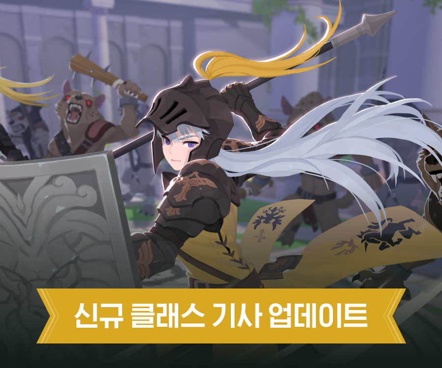
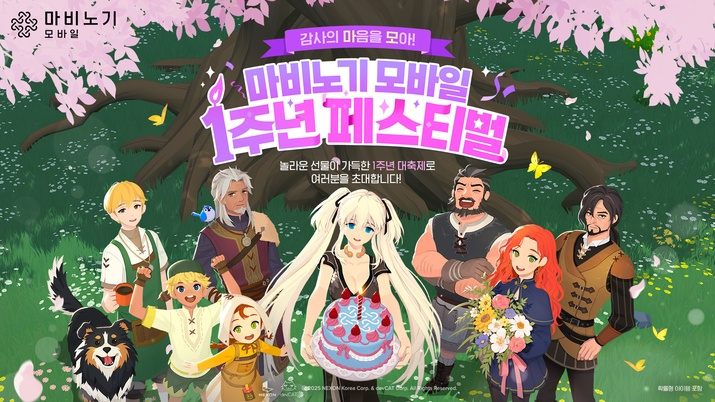

신규 클래스 [기사]
전사 계열의 신규 전직 클래스 '기사'가 추가되며, 견습 전사에서 전직 시 '기사'를 선택할 수 있습니다.
Vol. 1 | 2026. 04. 24 | 오늘의 에린 소식

전사 계열의 신규 전직 클래스 '기사'가 추가되며, 견습 전사에서 전직 시 '기사'를 선택할 수 있습니다.

'마비노기 모바일'의 서비스 1주년을 맞아 대규모 업데이트와 이벤트 중심의 신규 콘텐츠를 선보였습니다.